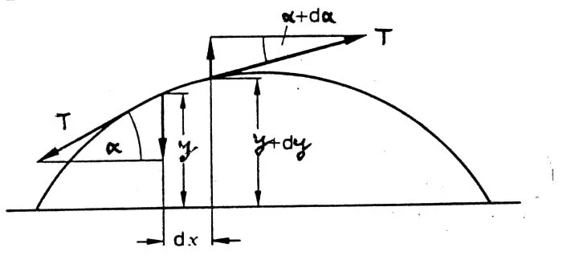
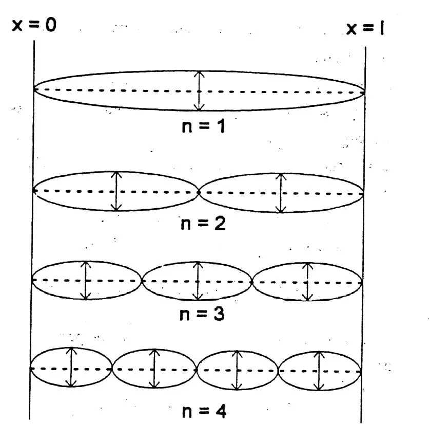
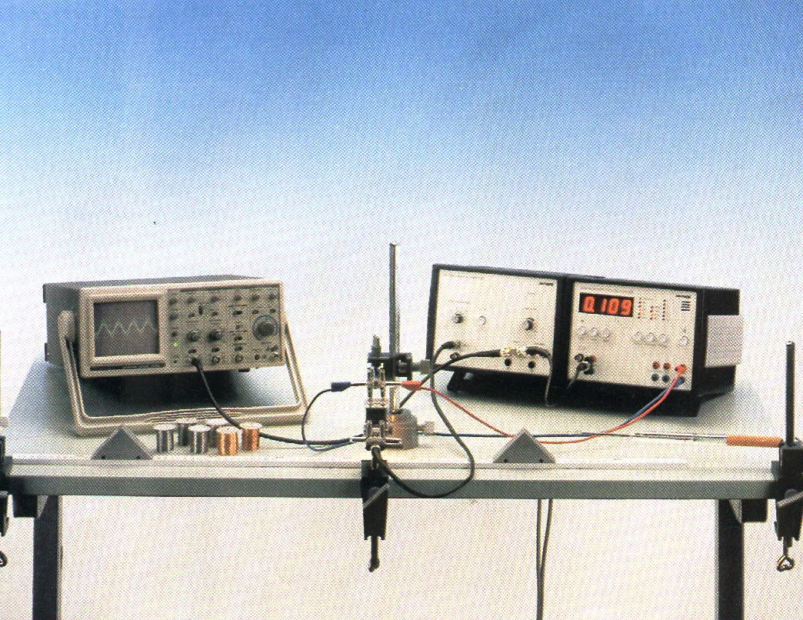

Una cuerda metálica cuyos extremos están fijos, y que está sometida a una tensión determinada, se somete a vibraciones, que son detectadas y amplificadas ópticamente. El proceso de vibración se observará en el osciloscopio. Se estudiará la dependencia de la frecuencia del armónico fundamental con la tensión y la longitud de la cuerda.
Vamos a estudiar las pequeñas vibraciones transversales de una cuerda homogénea cuyos extremos están fijos. Supuestas una serie de características ideales para la cuerda, podemos asumir que la longitud y la tensión no varían durante el proceso de cada vibración. Para obtener la ecuación diferencial que rige el movimiento de una onda transversal sobre una cuerda en tensión, observemos la figura 4.1.

Figura 4.1: Onda transversal sobre una cuerda tensa.
Consideremos un elemento diferencial de cuerda de longitud . Al desplazarse verticalmente a una altura con respecto a su posición de equilibrio, y estando sometidos sus extremos a una tensión , la componente vertical de la fuerza que actúa sobre el elemento de cuerda es
donde es el ángulo formado por la horizontal y la recta tangente a la curva en el punto estudiado. Por tanto, debe cumplirse que
Consideremos el caso de pequeñas vibraciones, en el cual se puede suponer que es infinitesimal. Entonces, es válido quedarse a primer orden en el desarrollo de Taylor de las funciones seno y tangente, esto es,
Al derivar la ecuación 4.2, teniendo en cuenta la aproximación dada por la ecuación 4.3, se obtiene
Ahora, se puede reescribir la ecuación 4.1, usando de nuevo el desarrollo de Taylor, como
La masa del elemento diferencial de cuerda es
donde es la densidad de la cuerda, y el área de la sección transversal. Entonces, aplicando la segunda ley de Newton, resulta
de donde se obtiene, finalmente, la ecuación de onda de D’Alembert
siendo
la velocidad de propagación de una onda transversal sobre la cuerda. Cuando se resuelve la ecuación 4.8 se obtiene como solución cualquier pulso, con ciertas condiciones matemáticas, que se propague con velocidad sobre la cuerda. Esta velocidad se llama también velocidad de fase y es la velocidad con que tendría que viajar un observador que se desplazase a lo largo del eje para ver siempre el mismo valor de . Dentro de todas las soluciones posibles, tienen especial interés las denominadas ondas armónicas ya que, aparte de ser por sí mismas soluciones de la ecuación de onda, cualquier otra solución más complicada puede descomponerse como una superposición de ondas armónicas, en una herramienta matemática llamada análisis espectral o análisis de Fourier.
Por otra parte, el hecho de que los dos extremos de la cuerda de esta práctica permanezcan en reposo, hace imposible la presencia de ondas armónicas viajeras, que propagan energía. Las ondas armónicas que verifican las condiciones de reposo de los extremos se denominan ondas estacionarias, no propagan energía y pueden entenderse como la superposición de dos ondas viajeras de igual amplitud que viajan en sentidos opuestos. Por tanto, sobre la cuerda existirá, en general, una superposición de ondas armónicas estacionarias. Esta superposición se escribe
donde y son, respectivamente, el número de ondas y la frecuencia angular de la onda , dados por
Asociados a ellos, se definen también la longitud de onda y la frecuencia de la onda como
Una característica de las ondas estacionarias, a diferencia de las ondas viajeras, es que la amplitud de vibración varía de un punto a otro a través de la fórmula . Por ejemplo, los puntos en donde se anula la función tienen amplitud nula y se llaman nodos.
Consideremos la contribución más importante en el desarrollo de Fourier dado por la ecuación 4.10. Esta contribución es la correspondiente a y se llama armónico fundamental,
tal que su longitud de onda es el doble de la longitud de la cuerda, y su frecuencia es
Las soluciones para se denominan armónicos superiores (véase la figura 4.2, donde se dibujan los armónicos principales, y se observan sus nodos).

Figura 4.2: Armónico fundamental y armónicos superiores.
En general, el armónico que se observa y predomina es el fundamental. Esto se debe a dos causas. En primer lugar, el tipo de excitación o condición inicial que se aplica (un golpe seco en un punto céntrico de la cuerda) favorece a este armónico fundamental porque se le parece mucho (de nuevo, ver la figura 4.2). En segundo lugar, en una cuerda real existe amortiguamiento, que termina por hacer desaparecer la vibración. Este amortiguamiento es mayor para los armónicos superiores que para el armónico fundamental y, por ello, éste último tarda más en desaparecer.
El aspecto general del montaje es el de la figura 4.3. La cuerda apoya dos puntos sobre dos pasadores triangulares (los extremos en reposo) y se mantiene tensa entre un gancho fijo y un dinamómetro, que a su vez está atado a una palometa regulable. La longitud (distancia entre los dos puntos fijos) puede variarse desplazando los pasadores triangulares, y medirse sobre una regla. La tensión se modifica girando la palometa regulable y se mide mediante el dinamómetro. La tensión no debe ser nunca mayor de para no producir la ruptura de la cuerda. También ha de cuidarse no intruducir la cuerda dentro del tornillo al girarlo.

Figura 4.3: Montaje experimental.
La vibración de la cuerda es estimulada mediante un golpecito seco con el martillo de goma en algún punto céntrico. Debe vigilarse constantemente que la tensión sobre la cuerda sea la deseada, especialmente tras los golpes de martillo y tras los cambios de longitud. Si se detectan vibraciones en la zona de la cuerda que queda fuera de los pasadores triangulares, estas vibraciones deben ser eliminadas apoyando suavemente el dedo. La vibración de la cuerda en un punto intermedio se detecta ópticamente a partir de las sombras que produce sobre una rendija fotosensible. Es necesario asegurarse de que la sombra de la cuerda caiga exactamente sobre la rendija fotosensible cuando la cuerda esté en reposo. También se debe acercar suficientemente la bombilla a la cuerda (unos de separación) porque así se detectarán mejor las vibraciones pequeñas. La señal que se origina en la rendija fotosensible es amplificada y transmitida al osciloscopio para su observación cualitativa, y también a un contador de cuatro dígitos para medir su frecuencia. Para la amplitud habitual de la señal que se genera en la célula fotoeléctrica, es suficiente amplificarla veces para verla en el osciloscopio. El contador debe arrancarse una vez que en el osciloscopio se observe una señal armónica suficientemente pura, es decir, una vez que se hayan eliminado los transitorios.
Se supone en todos los casos que se está trabajando con el armónico fundamental.